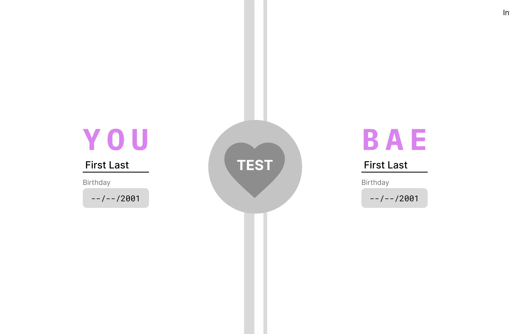

UI/UX Design & Dev.
Baeometer
Overview
The Bae-O-Meter™ is a fortune-telling web-app that predicts the strength of a relationship between any two entities. After entering some basic information about each party, the Bae-O-Meter™ will factor each piece of data into its algorithm, and determine how long their hypothetical relationship would last, and how it will end through an AI-generated love story.
My Efforts & The Team
UX/UI Designer, Developer
Tools Used
Figma, Miro, VScode, Github
Scope
7 weeks agile development sprint
What I Did
UX Design, Mobile & Desktop UI Design, Development
Jackie Piepkorn, Leader
(Jason) Jiecheng Chen, Designer & Developer
(Terry) Ka Wing Yan, Developer
Ishan Banerjee, Developer
Steve Padmanaban, Developer
Jenny Lam, Developer
Brandon Reponte, Developer
Alvaro Ramos-Sanchez, Developer
Design Process
Discover
Interview
What would make you want to use a relation prediction fortune-telling app?
By analyzing the interview data to understand users' actions, thoughts, and emotions, I was able to extract some key insights:
- People want the app to be enjoyable to play with because having fun is the main motivator for using apps like this.
- The UX needs to make users feel the results are somewhat believable, even if this is just fortune-telling app for fun.
- Users want the app to provide a personalized experience that resonates with their relationship dynamics.
- Users want to get the result quickly, they don't want to waste too much time on it. They might lose patience halfway through.
Competitive Analysis
Love Calculator
By Prokerala
Strength:
- Simple user interface, intuitive to use.
- Quick and simple to get a result, not time-consuming at all.
- Provides multiple versions of compatibility prediction test.
Weakness:
- Not believable, it requires too little input from the users.
- Not inclusive, it only has male and female options in the gender selection menu.
Compatibility Test
By Proprofs
Strength:
- A big set of in-depth questions that make the test feel professional and analytical. As a result, the result it provides has higher credibility.
Weakness:
- Too many questions. It requires the user to commit plenty of time. It might intimidate the user from trying out the test.
- More like a serious test, so the entertainment aspect is hindered.
- The more credible feeling result might also be a drawback because if the result is less than ideal it is harder for users to take it as a joke, which might negatively affect a relationship.
Define
Persona
To better empathize with my targeted users, I created a persona Cassie who is a college student interested in making connects with her partner in new and entertaining ways.
Cassie Wang
Background
Name: Cassie
Age: 20
Gender: Female
Occupation: College student
Major: Communication
Relationship Status: In a casual relationship
"I'm always up for trying out new apps with my friends for a good laugh. If it's quick to use and offers some insights into relationships, count me in!"
Goals and Needs
- Looking for ways to have fun and unwind after classes
- Interested in exploring relationships but not necessarily seeking a serious commitment
- Wants to connect with her partner in new and entertaining ways
- Wants an engaging app that aligns with her college lifestyle
- Enjoys fast-paced internet content
- Interests in fortune telling for entertainment
Challenges and Behaviors
- Busy college student, limited time for entertainment
- Uses her smartphone for various social media and entertainment apps
- Enjoys sharing funny and entertaining content with friends
- Engages with social trends and memes
User Stories
From Persona Cassie’s perspective, I wrote the following user stories to pinpoint the user needs, and with the team’s effort, we came up with realistic solutions for each need.
Story #1
As Cassie, a college student looking for fun and engaging apps, I want the app to be more engaging, so I can be more invested and have more fun.
Solution:
Have multiple types of interaction with the app (typing, drawing, selecting).
Have appealing visuals, including fancy animation & transition, and fun visual elements.
Story #2
As Cassie, who is looking for a light-hearted fortune-telling experience, I want the fortune-telling to be somewhat believable, so I can maintain the suspension of disbelief and enjoy the playful outcome without it feeling entirely random.
Solution:
All the inputs will be fed into a logical algorithm for calculating the result to make sure the result is consistent.
Story #3
As Cassie, who is currenly in a relationship and also as someone who values personal connections and experiences, I want the fortune telling to feel personal, so I can resonate with the predictions better.
Solution:
Based on the user inputs, show an ai generated love story on the result screen.
Story #4
As Cassie, a busy college student with limited time and fast-paced internet content, I don't want to spend too much time on it, because I want to engage with the app without feeling like I'm investing too much time, preventing me from losing interest midway.
Solution:
Keep the app short and sweet, keep friction at its minimum, and make sure the users can easily go through our app without blockers.
Story #5
As Cassie, a college student who enjoys spending time on her phone, I want websites to be mobile-friendly and responsive, so that I can easily access and use the app on my phone while on the go, without any usability issues.
Solution:
Responsive design for all popular screen sizes.
User Flow
I use a user flow diagram to map out the process of a typical user using Beaometer to achieve their goal. It grants me an overview of the app’s functionality and makes sure that users can go through the entire process without structural blockers.

Information Architecture
Even though Baeometer has a relatively simple structure, I still decided to build an information architecture. Because it maps out how different pages and pieces of information are connected and organized which establishes a clear hierarchical structure that benefits everyone on the team.
Benefits for me as a designer: It will be a handy guide for me to know how the elements of our app fit together, and that will be helpful especially when I am creating wireframes and prototypes. And since IA is flexible, I can add additional features after receiving user feedback.
Benefits for the team(including me): Every member of the team are software engineer. Having a clear IA helps us to better lay out the code structure which will improve the code quality, and better code quality leads to fewer usability issues, in other words, better UX.

Develop
Wireframe (Hand-Drawn and Digital)
I used both hand-drawn and digital wireframes to map out the visual structure of our app in a low-commitment way. And visualize the UX solutions that we came up with.
Visit ProjectI. Hand-Drawn
II. Digital
III. Types of Interaction
To make our app more engaging, we decided to let our users have multiple types of interaction with our app.
Typing
Users will be able to type in their birthday and name. Starting with simple interactions invite users to continue their user flow.
Drawing
User can draw on this page. Drawing is a rather uncommon interaction for apps, so such an interaction would make our app to be more memorable.
Selecting
User can also select one card from the three. Selecting without knowing the content enhances the mysterious theme for our fortune-telling app.
IV. Inclusive Design
Inclusive design: gender neutral word choice, does not assume user’s and their partner’s gender.
V. Responsive Design
Make sure users on both mobile and desktop can have a similar experience.
High-Fidelity Prototype
Based on the structural foundation laid out by my wireframe, I designed clickable high-fidelity prototypes for both Mobile and Desktop versions of the responsive web app.
I. High-Fidelity Design
II. Responsive Design (High-Fidelity)
Style Guide
Beaometer’s purpose is to create a fun experience of a couple's romantic relationship, hence the color choice of purple and pink highlights that romantic theme. Moreover, motifs of heart and other cute icons further insinuate the fun, romantic, and enjoyable UX of using Baeometer.
Baeometer (Thermometer)
The Baeometer, a.k.a the thermometer graphic, is present throughout the Baeometer experience.
It mainly serves two purposes: branding and functionality.
I. Branding
The thermometer, traditionally used to measure temperature, became our central graphic motif to reflect the concept of measuring the 'heat' or intensity of relationships. By using this motif throughout our app's design, I aimed to create a strong and consistent visual association between the app's brand and its function. This connection would enable users to quickly grasp the essence and the theme of our app while reinforcing its playfulness.
II. Functionality
a) Progress
It is a progress bar indicating how many steps a user needs to take to get to the result page
b) Result Indicator
On the resulting page, the Baeometer(thermometer) is also a visual indicator of the strength of a relationship based on the calculated result.
Web Application
I. Design Engineering
I am a designer and an engineer. My user-centered design thinking helped guide the team to make engineering decisions. At the same time my expertise in development and technologies informs my design decisions: knowing the strength and weaknesses of pieces of technologies that we would probably use to develop our app allow me to make more informed decisions to create better user experiences.
MPA vs. SPA
UCD thinking influences engineering decisions of making Baeometer into a SPA (Single Page Application).
The traditional MPA or Multi-page Application might be faster to load in terms of clock speed and
does not break the web pattern. It refreshes the screen whenever a user goes to the next page.
As a result, our app will appear to be slow and less attractive.
On the other hand, the SPA
architecture keeps all pages under a single URL, which means it allows me to create
fancy transitions and animations when jumping from page to page.
From the user’s perspective, this will be more appealing.
The downside of SPA is its complexity.
However, this will not be a huge trouble for us, since the scope of our app is relatively constrained.
Real-Time Generated AI Stories
vs. Pre-generated AI Stories
Technology expertise in using AI API influences the design decision of using Pre-generated AI Stories.
Real-time generated AI stories are very appealing because they are unique stories based on
the users’ input. However, using AI is extremely risky.
Firstly, we will be relying on programs
that are not under our control. If the server that powers the AI engine is down,
our app will also be down.
Secondly, AI is probabilistic, meaning testing is difficult
and the results it produces are uncontrollable. And if it produces offensive results,
we will be responsible for it.
As a result, I decided to create a set of pre-generated stories to keep our app risk-free.
And since our app aims to create a fast-paced experience, and if the set of stories is large enough,
we could create the illusions of real-time generated stories.
II. Inclusive Design
a) Keyboard Support
We anticipate keyboard users. I developed the app so that users can walk through the app with keyboard controls only. Whenever the user lands on a new page, the elements that need interaction will be auto-focused. And with keys like “enter”, “tab” and “shift”, a user can complete the user journey without using a mouse.
Test Button
After the user fills out all the necessary information, hitting the enter key lets the user start the test. If there are unfilled required input fields, hitting the enter key will alert them to fill out all the blank spots.
Next Button
After the user finishes drawing on the canvas, hitting the enter key will first focus on the next button. Hitting the enter key again will confirm the drawing and proceed to the next step.
Card Selection
On load, Baeometer will first focus on the first card. Pressing the Tab key allows users to select the cards in order. Hitting the enter key once will confirm the selection.,hitting it again will then lead to the resulting page.
b) Touch Screen
We also anticipate touchscreen users. As we are coding the app, we make sure that each element is interactive on a touch screen. For example, we developed touchscreen support for the canvas element that does not natively support touchscreen drawing.
III. Responsive Design Edge Cases
Typically desktop screens are in landscape mode and mobile screens are in portrait mode. To make our app more accessible for a wider range of screen sizes and orientations, I coded the app so that it fully supports both desktop screens in portrait mode and mobile screens in landscape mode.
Deliver
Usability Tests and Iteration
After developing our app, I conducted multiple usability tests. From the participants of the tests, I gathered many valuable feedbacks that helped us improve our app's user experience.
Feedback:
There are too many things to interact with on the front page, it is quite confusing which one to interact with and in what order.
Solution: By following the principles of Progressive Disclosure, I decided to have two additional pages before the front page to break down the overwhelming unclear user flow into a streamlined 3 steps process.
Due to the low multiplier of our original algorithm, the resulting score is relatively low. Many of the testers reflected that they did not like the "bad fortune" results they were getting. As an app for entertainment, we need to make sure users are satisfied with the results
Solution: Make changes to the underlying algorithm, and boost the test results up.
Some testers said they wanted to redraw the picture on the canvas, and hitting the reload button reloads the entire website.
Solution: Add a delete button on the canvas-drawing page.
Observation:
Testers often hit the next button before filling out the blanks, which triggers an error message.
Solution: Use grayed-out buttons to signify the button is inactive at this moment. And hitting enter key will automatically focus on the field that needs to be completed.
Try It Out
Interactive Website
Click the screen below to interact
Prototype
Click the screen below to interact